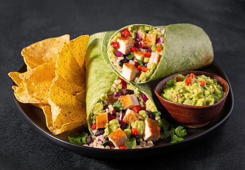

Tortilla Española, like many of my favorite Mediterranean dishes, is simple and has only a few ingredients. But when the ingredients are potatoes and onions fried in a lot of olive oil, eggs, salt and pepper, what could be better? Not many foods deserve the word “rustic” more than Tortilla Española, and when combined with some freshly baked bread, it is truly one of the culinary treasures of the Mediterranean.